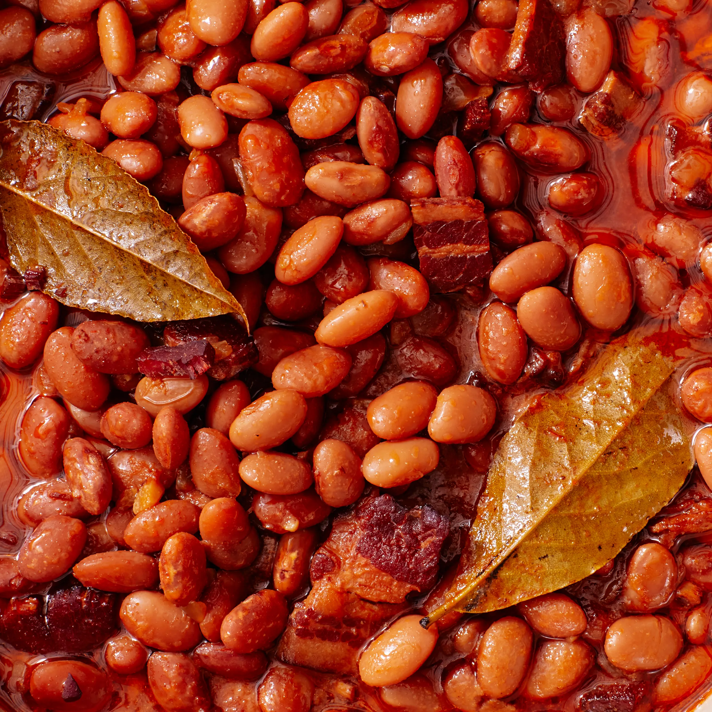

Boston Baked Beans

Description
Rich, smoky, and complexly sweet, these from-scratch baked beans are worth the long—mostly hands-off—cook time.
Ingredients
- 2 cups dry navy beans, soaked overnight
- ½ pound uncooked bacon strips
- 1 medium onion, diced
- ½ cup ketchup
- 3 tablespoons molasses
- ¼ cup brown sugar
- 1 tablespoon Worcestershire sauce
- 2 teaspoons salt
- ¼ teaspoon ground black pepper
- ¼ teaspoon dry mustard
Preparation
- Transfer soaked navy beans and soaking water to a saucepan.
- Bring to a boil. Reduce heat and simmer until tender, approximately 1 to 2 hours.
Drain and reserve the cooking liquid.
- Preheat the oven to 325 degrees F (165 degrees C).
- Arrange 1/2 of the beans in the bottom of a 2-quart casserole dish. Place 1/2 of the bacon strips
over the beans and sprinkle 1/2 of the onions over top. Repeat layers once more.
- Combine ketchup, molasses, brown sugar, Worcestershire sauce, salt, pepper,
and dry mustard in a large saucepan over medium heat; bring to a boil.
- Pour sauce over the beans. Pour in just enough reserved cooking
liquid to cover the beans. Cover the casserole dish with a lid or aluminum foil.
-
Bake in the preheated oven for 1 1/2 hours. Remove the lid and continue to cook,
checking every 1/2 hour or so and adding more cooking liquid if necessary to prevent the beans
from getting too dry, until beans are tender, 1 1/2 to 2 1/2 more hours.
Return